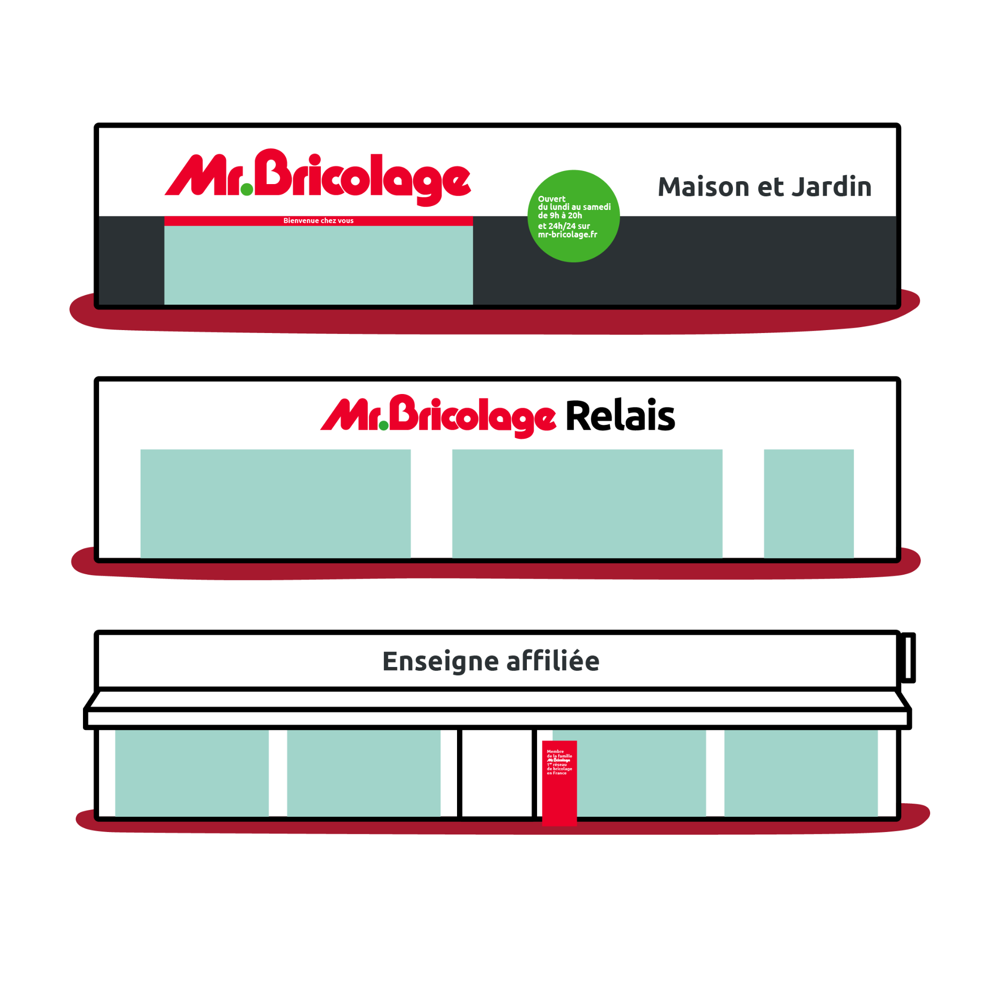

Du brief marketing jusqu'à l'ouverture, chaque étape est pilotée par nos équipes pour garantir une ouverture conforme, dans les délais et à la hauteur des standards Mr.Bricolage.
2 étapes de référence qui formalisent les objectifs du projet, les cibles visées, les messages clés et les livrables attendus. Il sert de support commun pour l'ensemble des équipes : projet, travaux, dessin, agencement, IV, merchandising, communication.
Assurer une exécution cohérente du projet et définir une date d'ouverture partagée. Piloté par le Développeur et le Responsable Réseau, le brief marketing marque le passage de relais vers les CPM et les équipes supports.
Valider toutes les dimensions stratégiques, commerciales et financières avant de décider l'ouverture. Sécuriser la faisabilité du projet, aligner les acteurs sur les enjeux et garantir une préparation structurée et maîtrisée.
Fournir un cadre clair et structurant, piloté conjointement par le CPM et les équipes supports. Étape obligatoire avant le passage en phase de déploiement.
L'ensemble des interventions nécessaires pour préparer, transformer et équiper le magasin : travaux du bâtiment, installations techniques et mise en place du mobilier d'agencement selon le parcours client défini.
Piloté par le Support Technique et l'Agencement, cette étape fournit la base physique et fonctionnelle du futur magasin. Le respect du planning est impératif car l'aménagement conditionne les implantations.
Pilotage de la mise en œuvre terrain du projet : suivi rigoureux de l'avancement, conformité aux standards concept et merchandising, gestion des ressources équipes support et prestataires.
Piloté par le Chef de Projet Magasin, le déploiement vise à sécuriser et fiabiliser l'exécution terrain afin de garantir une ouverture conforme, opérationnelle et dans les délais. Il assure également la transition vers un magasin autonome.
Vérifier que tout est prêt le jour J pour accueillir les clients dans les meilleures conditions. Finaliser les derniers points terrain et soutenir la montée en autonomie et en performance de l'équipe magasin.
Piloté par le Chef de Projet Magasin, le post-ouverture consiste à finaliser les tâches non réalisées, accompagner les équipes et assurer la transition vers un magasin pleinement opérationnel et performant.
Sous 72h, un expert Mr.Bricolage vous recontacte pour étudier votre projet et identifier les leviers concrets pour améliorer la performance de votre point de vente.
Lancer mon projet